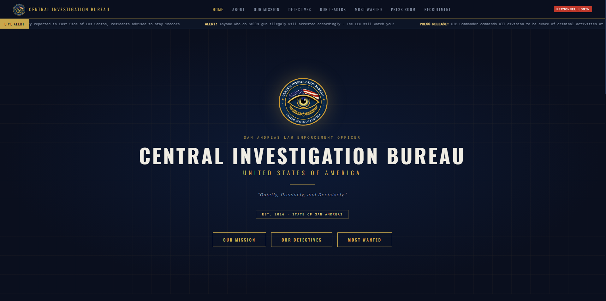
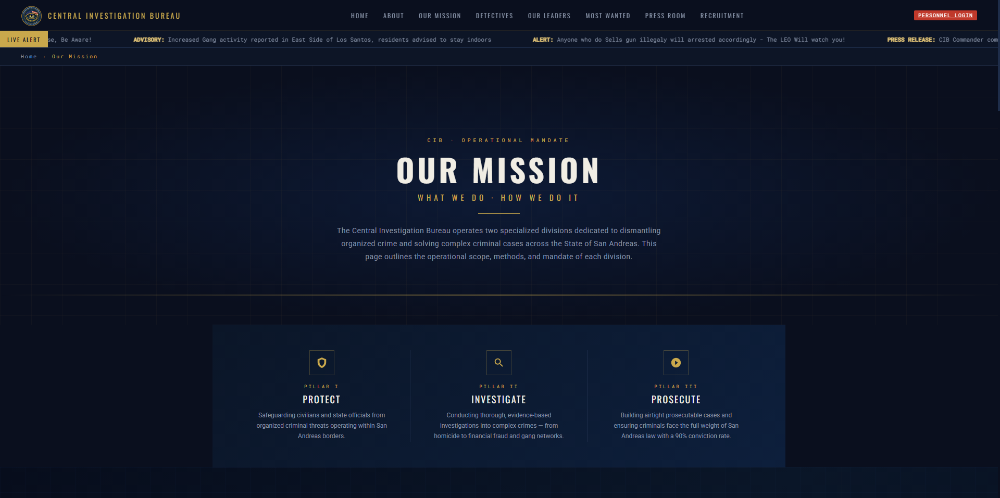
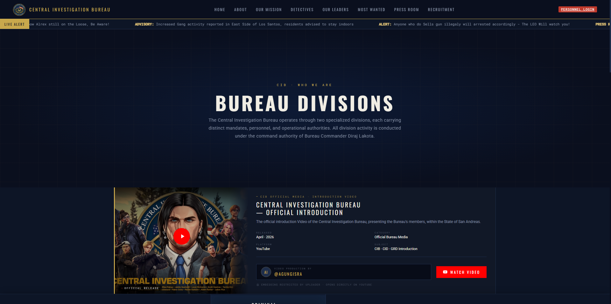
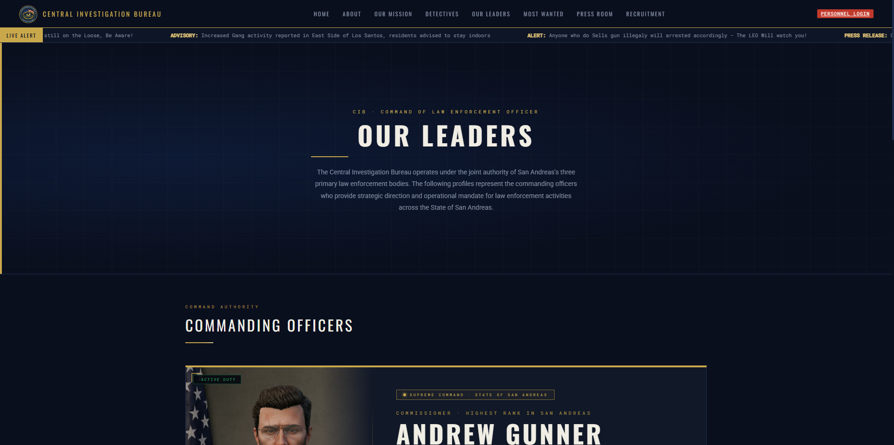
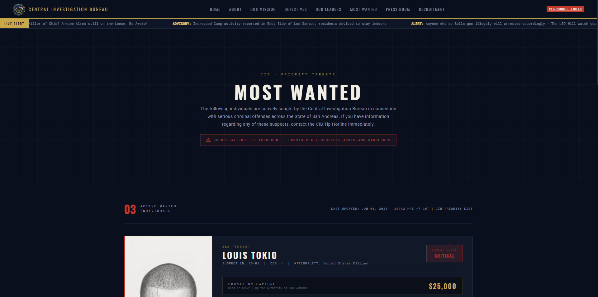
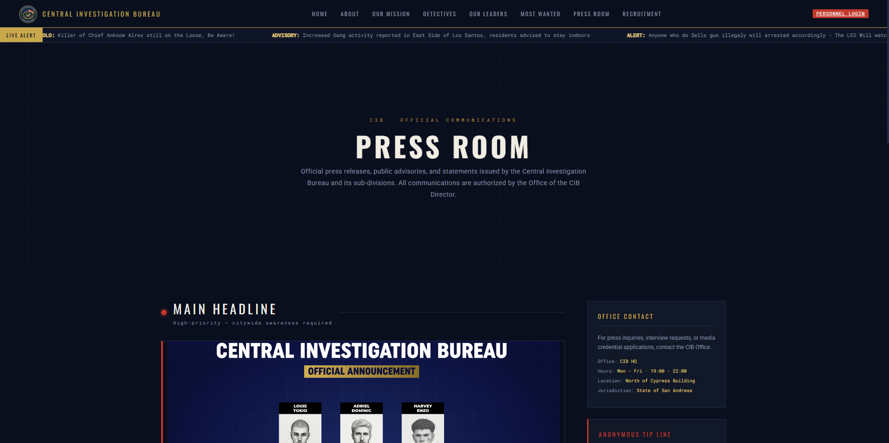
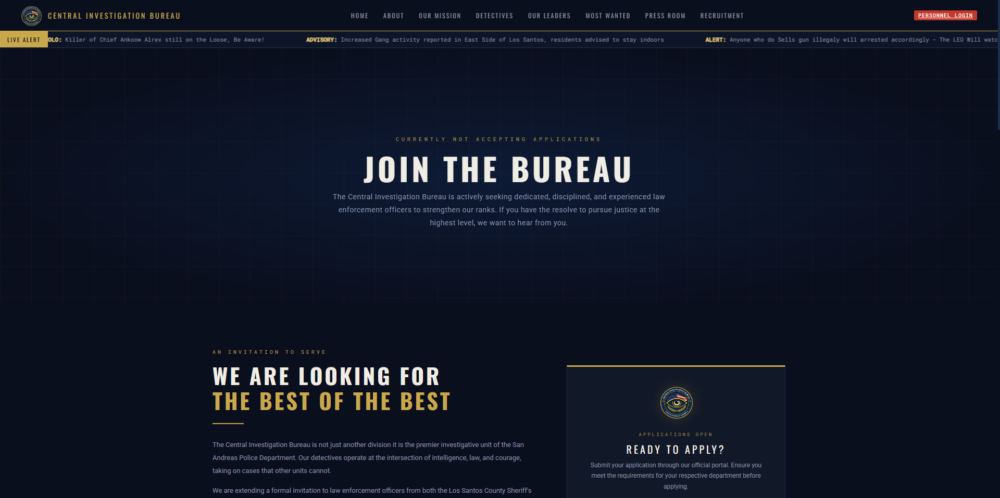
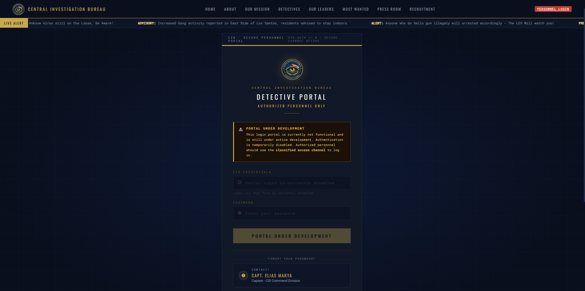

[ SCREENSHOT SLOT ]
src="screenshot-home.png"
↗ centralinvestigationbureau.vercel.app/
PAGE · P-01 · PUBLIC
Home — Command Overview
Live
The bureau's primary public-facing landing page. Displays active threat level, real-time statistical performance, division summaries, and active warrant highlights. Serves as the state's live window into CIB operational status.
Threat Level Display
Live Statistics
Division Overview
Warrant Spotlight
Visit Page ↗

[ SCREENSHOT SLOT ]
src="screenshot-mission.png"
PAGE · P-02 · PUBLIC
About & Our Mission
Live
Formal documentation of CIB's institutional mandate. Outlines the three core pillars — Protect, Investigate, Prosecute — and details the operational framework guiding all CIB casework from intelligence intake through to conviction.
Mandate Documentation
Core Pillars
Operational Framework
Visit Page ↗

[ SCREENSHOT SLOT ]
src="screenshot-divisions.png"
PAGE · P-03 · PUBLIC
Divisions — Personnel & Structure
Live
Full roster of CIB's two active sub-divisions: C.I.D and G.R.D. Each entry includes detective profiles, operational responsibilities, and divisional chain of command — a complete, transparent record of bureau personnel.
C.I.D Roster
G.R.D Roster
Personnel Records
Visit Page ↗

[ SCREENSHOT SLOT ]
src="screenshot-leaders.png"
PAGE · P-04 · PUBLIC
Our Leaders — Executive Command
Live
Profiles of the CIB executive leadership — CEO, CCO, CTO, CMO, and COO. Documents the bureau's top-level decision-makers, their portfolios, and their authority within CIB's command structure, ensuring public accountability.
C-Suite Profiles
Command Structure
Public Accountability
Visit Page ↗

[ SCREENSHOT SLOT ]
src="screenshot-wanted.png"
PAGE · P-05 · PUBLIC
Most Wanted — Warrant Registry
Live
A live registry of individuals with active CIB arrest warrants. Each entry includes warrant reference number, name, charge summary, and threat classification. A direct public safety tool — enabling citizens to report dangerous suspects.
Active Warrants
Threat Classification
Tip Hotline Integration
Visit Page ↗

[ SCREENSHOT SLOT ]
src="screenshot-press.png"
PAGE · P-06 · PUBLIC
Press Room — Official Statements
Live
CIB's official media communication channel. Enables the bureau to publish press releases, public notices, and official statements — establishing CIB as the authoritative record for all information regarding its cases and operations.
Press Releases
Public Notices
Media Liaison
Visit Page ↗

[ SCREENSHOT SLOT ]
src="screenshot-recruitment.png"
PAGE · P-07 · PUBLIC
Recruitment — Detective Applications
Live
CIB's public recruitment portal. Lists open positions, outlines qualification requirements, and provides a formal application pathway for qualified civilian candidates — directly supporting force expansion and long-term operational capacity.
Open Positions
Application Process
Force Expansion
Visit Page ↗

[ CLASSIFIED — SCREENSHOT SLOT ]
src="screenshot-nexus.png"
⬥ CLASSIFIED — INTERNAL ACCESS ONLY
PAGE · P-08 · INTERNAL / CLASSIFIED
Nexus — Internal Operations Portal
In Development
A classified internal platform accessible only to active CIB personnel. Nexus provides secure, centralised access to case management, warrant status, divisional intelligence, and inter-unit communications. Funding will accelerate full deployment.
Classified Access
Case Management
Internal Intelligence
⬥ Access Restricted — Classified